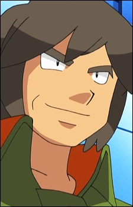

Masayuki Omoro is a Japanese voice actor.
- Gender: Male
- Birthday: March 8, 1948
- Hometown: Ishikawa, Japan
- Hobby: Swordfighting

|
|---|
| |
Masayuki Omoro is a Japanese voice actor.
|
|
|---|
|  | Brandon |
|
Brandon is the Frontier Brain and chief of the Battle Frontier's Battle Pyramid. He does not appreciate foolishness from others. He is extremely serious and reserved, despite his serious attitude. Brandon believes in the bond between Trainer and Pokemon. |
 |
Tim Marcoh |
|
Tim Marcoh was the leading researcher in creation od the Philosopher's Stone. He was called the Crystal Alchemist. He suffers from post traumatic stress disorder due to guilt. He is honest hardworking man who does not bluff. |
Go Back to Main Page |
Go Back to Homepage |
|
|
|
OR |
|